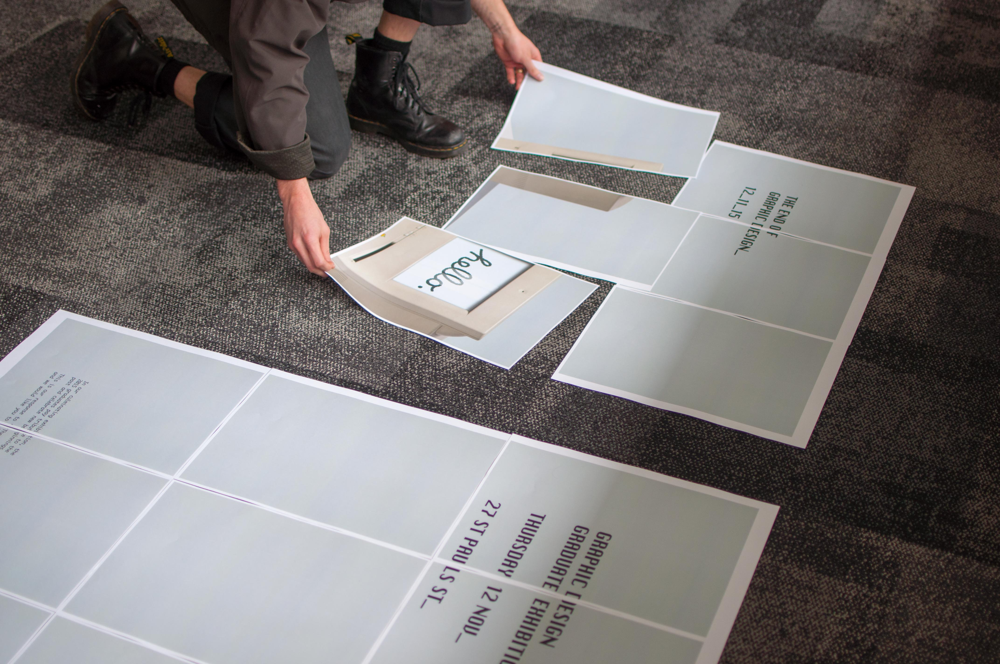
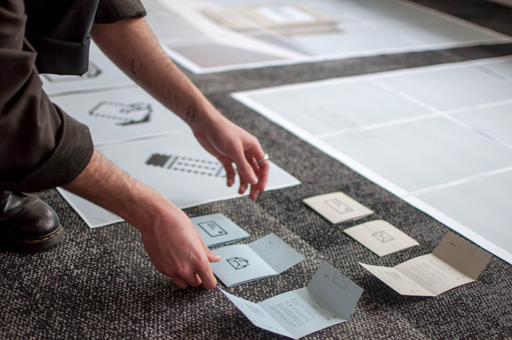
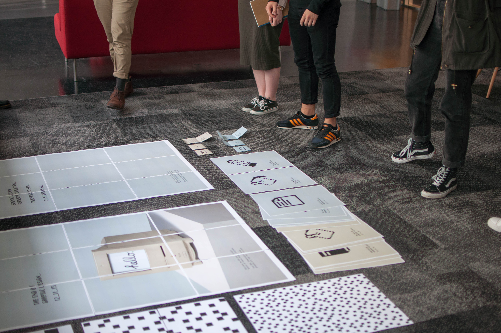

An insight into our journey to the end_
A blog of sorts, showing both the large and small parts being played to bring together an exhibition worth remembering. Scroll down to read.
Branding finalised_
After many long hours of design, critique and numerous concept refinments, Hugo lead the branding team to a result that we as a cohort feel encapsulates a conversation important to both current and upcoming graphic designers.
This year marks the conclusion of the graphic design major at AUT. The End of Graphic Design_ pays tribute to traditional practice and celebrates new beginnings.
We will be regularly updating this page with posts of what we're preparing for our exhibtion. Stay tuned...


